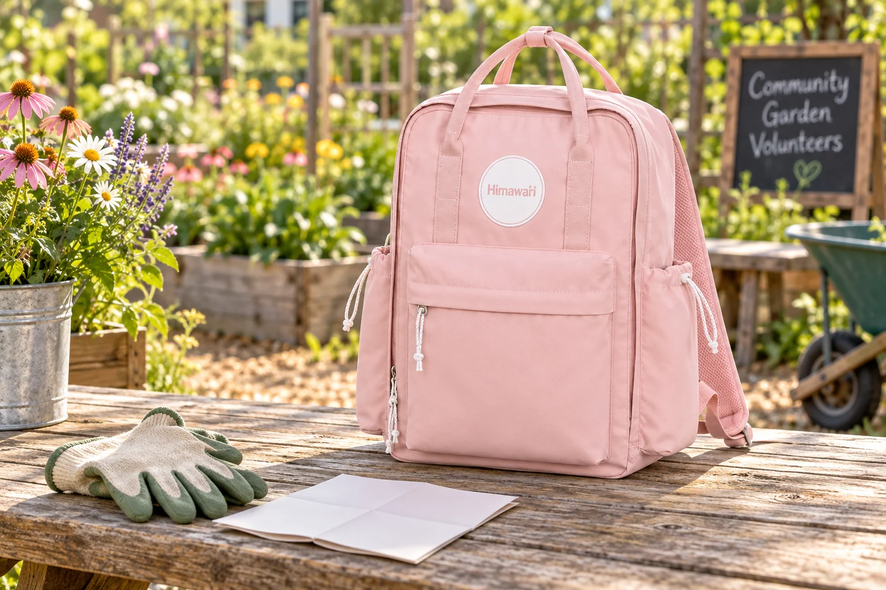

동네 정원 봉사 가는 날: 작업 전후 가방을 나누는 방법

동네 정원이나 화단을 돌보는 봉사에 참여하면 평소 산책과는 다른 물건을 만집니다. 안내문과 개인 소지품은 깨끗하게 유지해야 하고, 작업을 마친 장갑에는 흙이 묻을 수 있습니다. 주최 측이 준비하는 도구와 개인이 챙길 물건을 먼저 구분하고, 가방은 작업 중 꺼낼 물건보다 끝난 뒤 분리할 물건을 기준으로 정리해 보세요. 실내외를 오가는 날에도 바로 적용할 수 있는 작은 원칙입니다.
주최 측의 안내를 먼저 읽습니다
모이는 장소와 시간, 준비물, 현장에서 제공하는 도구를 주최 측 공지로 확인하세요. 작업용 장갑이나 도구가 제공되는지 모른 채 같은 물건을 여러 개 담을 필요는 없습니다. 개인 물병과 연락 도구, 이동에 필요한 물건처럼 본인이 관리할 것만 가방 목록에 남깁니다. 날씨와 현장 조건에 맞는 복장 안내도 확인하되, 가방이 비나 흙을 막아준다고 가정하고 준비물을 정하지는 마세요.
개인 물건과 작업 물건을 출발할 때부터 구분합니다
휴대전화, 지갑, 교통카드처럼 깨끗하게 유지할 물건은 안쪽의 별도 묶음에 둡니다. 작업 중 사용할 장갑이나 작은 개인 도구는 쉽게 꺼낼 수 있는 파우치에 따로 넣으세요. 날카로운 도구가 필요하다면 가방 안에 그대로 넣지 말고 주최 측의 운반 지침을 따릅니다. 음료 용기는 뚜껑을 확인하고 종이 안내와 떨어뜨립니다. 이렇게 위치를 정해두면 흙이 묻은 손으로 개인 소지품을 계속 만질 일이 줄어듭니다.
작업하는 동안 가방을 둘 자리를 확인합니다
현장에 도착하면 가방을 내려놓아도 되는 공간을 먼저 물어보세요. 화단 가장자리나 이동 통로에 두면 다른 사람이 걸려 넘어지거나 가방에 물과 흙이 묻을 수 있습니다. 잠깐 쉬는 동안 개인 물건을 꺼냈다면 같은 주머니에 돌려놓고, 자리를 옮길 때 가방이 남아 있지 않은지 확인합니다. 대표 사진처럼 야외 작업대가 있는 공간은 연출일 뿐 실제 봉사 현장마다 보관 규칙은 다를 수 있습니다.
끝난 장갑과 흙 묻은 물건은 별도로 보관합니다
작업을 마치면 흙이 묻은 장갑과 깨끗한 소지품을 바로 섞지 마세요. 개인이 가져온 장갑이라면 별도 봉투에 넣어 이동하고, 공용 도구는 주최 측의 반납 장소로 가져갑니다. 젖은 물건이나 흙이 많은 물건을 가방 안감에 직접 대지 않는 편이 정리에 수월합니다. 가방이 더러워져도 무리하게 현장에서 닦기보다 귀가 후 제품 표시와 소재에 맞는 방법을 확인하세요.
집에서는 가방보다 묶음을 먼저 풉니다
집에 도착하면 작업용 봉투를 먼저 꺼내고 장갑과 소품을 각각 관리합니다. 가방 바닥과 주머니에 흙이나 작은 잎이 남았는지 살펴보고, 부드럽게 털어낸 뒤 통풍되는 곳에서 상태를 확인하세요. 다음 봉사 일정이 있다면 필요한 물건을 다시 채우기 전에 이번에 실제로 쓴 것과 쓰지 않은 것을 구분해 목록을 줄입니다. 대표 사진은 실제 Himawari No.1089 핑크를 참조한 AI 연출이며 장갑과 원예 소품은 포함되지 않습니다.
참고·안내
- Himawari No.1089 제품 정보
- 실제 Himawari No.1089 핑크 원본 사진을 참조한 AI 연출 이미지입니다. 정원 작업대와 장갑 등 주변 소품은 연출이며 제품 구성품이 아닙니다.
자주 묻는 질문
봉사 활동에 작업 도구를 직접 가져가야 하나요?
주최 측 공지에서 제공 도구와 개인 준비물을 먼저 확인하세요. 도구의 운반·반납 방법도 현장 안내를 따르는 것이 좋습니다.
흙 묻은 장갑을 가방에 넣어도 되나요?
개인 장갑은 깨끗한 소지품과 떨어진 별도 봉투에 넣고, 귀가 후 꺼내 관리 표시와 소재에 맞게 정리하세요.